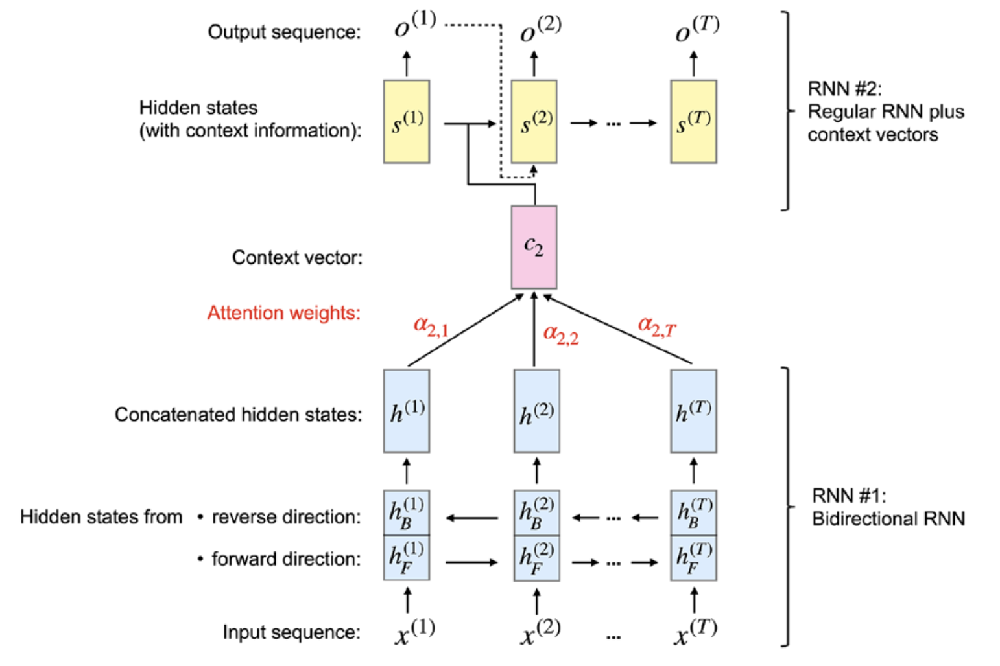

Lviv University
Visualization
def show_heatmaps(matrices, xlabel, ylabel, titles=None, figsize=(2.5, 2.5),
cmap='Reds'):
"""Show heatmaps of matrices."""
d2l.use_svg_display()
num_rows, num_cols, _, _ = matrices.shape
fig, axes = d2l.plt.subplots(num_rows, num_cols, figsize=figsize,
sharex=True, sharey=True, squeeze=False)
for i, (row_axes, row_matrices) in enumerate(zip(axes, matrices)):
for j, (ax, matrix) in enumerate(zip(row_axes, row_matrices)):
pcm = ax.imshow(matrix.detach().numpy(), cmap=cmap)
if i == num_rows - 1:
ax.set_xlabel(xlabel)
if j == 0:
ax.set_ylabel(ylabel)
if titles:
ax.set_title(titles[j])
fig.colorbar(pcm, ax=axes, shrink=0.6);
attention_weights = torch.eye(10).reshape((1, 1, 10, 10))
show_heatmaps(attention_weights, xlabel='Keys', ylabel='Queries') Example
Regression and classification via kernel density estimation.
Nadaraya-Watson estimators
Rely on a similarity kernel \(\alpha(q,k)\) relating queries \(q\) to keys \(k\).
An equation for regression and classification
\[ f(\bb{q}) = \sum_i v_i \frac{\alpha(\bb{q}, k_i)}{\sum_j \alpha(\bb{q}, k_j)} \]
Note
These estimators demonstrate the limits of hand-crafted attention mechanisms.
Computing the output of attention pooling as a weighted average of values, where weights are computed with the attention scoring function and the softmax operation.
RNN model for seq2seq. Parses entire input sequence.
Why parse the whole sentence? Translating a sentence word by word can lead to grammatical errors.
Problems
Solution
Use attention mechanism to assign different attention weights to each input element.

RNN #1
\[ c_i = \sum\limits_{j=1}^T a_{ij}h^{(j)}. \]
\begin{frame}{Bahdanau} :::{.callout-tip icon=false} ## RNN #2
Hidden states \(s^{(i)}\) depend on:
Attention weights computation
\[ \alpha_{ij} = \frac{\exp (e_{ij})}{\sum\limits_{k=1}^T \exp (e_{ik})}, \] where \(e_{ij}\) is an alignment score evaluating how well the input around position \(j\) matches the output around position \(i\).
Self-attention
Transformer can be thought of as a NN architecture entirely based on attention, without the RNN parts.
This is also called self-attention.
Suppose we have an input sequence \(x^{(1)},\dots,x^{(T)}\), and output sequence \(z^{(1)},\dots,z^{(T)}\). Here \(x^{(i)}, z^{(i)} \in \mathbb{R}^d\).
For a seq2seq task, the goal of self-attention is to model the dependencies of the current input element to all other input elements.
Self-attention stages
\[ z^{(i)} = \sum\limits_{j=1}^T \alpha_{ij} x^{(j)},\\ \omega_{ij} = x^{(i)T}x^{(j)},\\ \alpha_{ij} = \frac{\exp \omega_{ij}}{\sum\limits_{j=1}^T \exp \omega_{ij}} = softmax \left([w_{ij}]_{j=1\dots T}\right), \\ \sum\limits_{j=1}^T \alpha_{ij} = 1. \]
Scaled dot-product attention: introduce learnable parameters.
Introduce three weight matrices: \(U_q, U_k, U_v\): \[ q^{(i)} = U_q x^{(i)},\\ k^{(i)} = U_k x^{(i)},\\ v^{(i)} = U_v x^{(i)},\\ \]
\[ \omega_{ij} = q^{(i)T} k^{(j)},\\ \alpha_{ij} = softmax \left(\frac{\omega_{ij}}{\sqrt{m}}\right),\\ z^{(i)} = \sum\limits_{j=1}^T \alpha_{ij} v^{(j)}. \]
How is \(\bb{q}k\) evaluated.
Information flow in a scaled dot-product self-attention layer. How is \(\bb{q}k\) evaluated.
Original transformer architecture.
Multi-head self attention: a modification of scaled dot-product attention.
Multiple heads (sets of query, key, value matrices), similar to multiple kernels in CNNs.
Read sequential input \(\bb{X} = \left(x^{(1)},\dots,x^{(T)}\right)\). Suppose each element is embedded by a vector of length \(d\). Therefore, input can be embedded into a \(T\times d\) matrix. Then, create \(h\) sets of query, key, value matrices:
\[ U_{q_1}, U_{k_1}, U_{v_1},\\ \cdots \\ U_{q_h}, U_{k_h}, U_{v_h}. \]
\(U_{q_j},U_{k_j}\) have shape \(d_k \times d\).
\(U_{v_j}\) has shape \(d_v \times d\).
Resulting value sequence has length \(d_v\).
Practical considerations
Vectorized computations
\[ q_j^{(i)} = U_{q_j}x^{(i)}. \] Then we concatenate vectors.
Concatenating the scaled dot-product attention vectors into one vector and passing it through a linear projection.
Decoder layer
Similar to the encoder, the decoder also contains several repeated layers. Besides the two sublayers that we have already introduced in the previous encoder section (the multi-head self-attention layer and fully connected layer), each repeated layer also contains a masked multi-head attention sublayer.
Masked attention is a variation of the original attention mechanism, where masked attention only passes a limited input sequence into the model by “masking” out a certain number of words. For example, if we are building a language translation model with a labeled dataset, at sequence position \(i\) during the training procedure, we only feed in the correct output words from positions \(1,\dots,i-1\). All other words (for instance, those that come after the current position) are hidden from the model to prevent the model from “cheating.” This is also consistent with the nature of text generation: although the true translated words are known during training, we know nothing about the ground truth in practice. Thus, we can only feed the model the solutions to what it has already generated, at position \(i\).
Concatenating the scaled dot-product attention vectors into one vector and passing it through a linear projection.
Layer normalization mechanism, which was first introduced by J. Ba, J.R. Kiros, and G.E. Hinton in 2016 in the same-named paper Layer Normalization (URL: https://arxiv.org/ abs/1607.06450).
Recursion vs recurrence
RNNs are recurrent.
Transformers are recursive – therefore no need to unroll.
Attention benefits
Example of learned attention weights (Vaswani 2017 paper)